数据检查子面板：逐任务 · 逐物体 · 成功轨迹样例 · 指标
看板行数64
有样例视频57
有硬旗标 / 严重已知问题23
需关注（任意提示）54
无可达数据（占位）7
本轮核查结论（2026-09-05/06，详见 ops 仓库 VALIDATION_PIPELINE.md）
① PsiBot pick_place 全部行：视频里的红叉是静态场景几何，真实目标从未渲染，parquet 也未记录物体位姿 → 场景/配方缺陷，需修后重采。② UR5E pick_place/beaker100：L2 证实指垫持续嵌入杯口 4.4mm、手指入腔、压桌 6–9mm（靠穿模拿起）→ 不建议发布。③ PsiBot stack/beaker250：0718 重采为 8cm 丢入式；stack/beaker100 4/100 集黏附坠落/翻滚。④ FR3 grasp 烧杯：材质覆盖/默认材质导致颜色不对，视距偏远 → 修材质与相机合同后重采。⑤ PsiBot press：head/chest 视角偏斜 → 修相机合同后重采。⑥ 面板缺失数据：open/close/multi_tools/handover×2/pour×2/bimanual 塑料量筒/pick_place 酒精灯 在 lyf_4090 找到 daisi 0715 副本（已补视频+审计）；FR3 stack250 在 canonical_v3 副本；FR3 open cabinet、long_horizon、各 pour 新门、UR5E pick_place 量筒/stack250 无任何副本 → 需重采。⑦ mortar grasp 倾斜 5–8°。
① PsiBot pick_place 全部行：视频里的红叉是静态场景几何，真实目标从未渲染，parquet 也未记录物体位姿 → 场景/配方缺陷，需修后重采。② UR5E pick_place/beaker100：L2 证实指垫持续嵌入杯口 4.4mm、手指入腔、压桌 6–9mm（靠穿模拿起）→ 不建议发布。③ PsiBot stack/beaker250：0718 重采为 8cm 丢入式；stack/beaker100 4/100 集黏附坠落/翻滚。④ FR3 grasp 烧杯：材质覆盖/默认材质导致颜色不对，视距偏远 → 修材质与相机合同后重采。⑤ PsiBot press：head/chest 视角偏斜 → 修相机合同后重采。⑥ 面板缺失数据：open/close/multi_tools/handover×2/pour×2/bimanual 塑料量筒/pick_place 酒精灯 在 lyf_4090 找到 daisi 0715 副本（已补视频+审计）；FR3 stack250 在 canonical_v3 副本；FR3 open cabinet、long_horizon、各 pour 新门、UR5E pick_place 量筒/stack250 无任何副本 → 需重采。⑦ mortar grasp 倾斜 5–8°。
指标说明 任务指标：搬运倾斜（物体 z 轴相对初始姿态的最大偏角，携带期间）、抬升高度、起始位随机跨度与不同起点数；PsiBot 行另有运行时审计（落点误差、释放对齐、搬运倾角、落地后下压）。安全/物理：L3 30fps 审计——硬旗标 = 脱手坠落(>3cm)/瞬移/脱手速度>1m/s/翻滚>45°/滑脱；压桌深度；松手高度；PsiBot 行另有接触力事件数、物体线/角速度、累计偏转。UR5E beaker100 行有 L2 精确几何（joint_debug 逐物理子步，夹爪 10 个碰撞网格顶点 vs 杯壁/底/桌面）。视频渲染质量：每相机码率（<1500 kbps 标黄）、清晰度（Laplacian 方差，<100 标黄）、亮度均值、跨集相机一致性（各集首帧顶部背景带 MAD，>3 标黄：视角/光照在集间变化）、帧数与数据一致性、分辩率/fps/编码、材质覆盖（色块 = PreviewSurface 颜色）。已知问题：人工核查 + 审计得出的结论与建议动作。
PsiBot（双臂 RM75-6F + G0-R 灵巧手）
grasp 13 物体 · 13 有视频 · 0 无数据
| 物体 | 实测集数 / 看板 | 成功轨迹样例（head | chest | third）+ 首末帧 | 任务指标 | 安全 / 物理审计 | 视频渲染质量 | 已知问题 · 数据位置 | ||||||||||||||||||||
|---|---|---|---|---|---|---|---|---|---|---|---|---|---|---|---|---|---|---|---|---|---|---|---|---|---|---|
glass_beaker_100ml 抓取 100ml 玻璃烧杯 ←攻坚行 搬运倾斜最大 7.0° | 100 5105 帧 @30 fps 看板 100/100 +300 补采=400demo ✅️ 完成 | 样例 ep 0 · 1.7s · 65 KB · 原文件 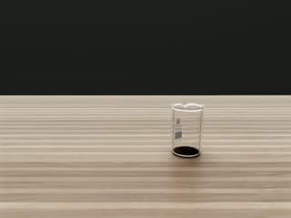 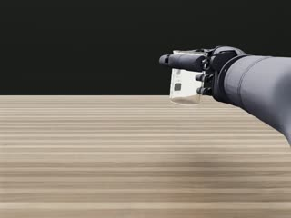 chest 首→末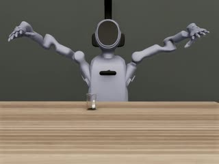 third 首→末 | 搬运倾斜：中位 3.4° / p95 4.3° / 最大 7.0° 抬升高度中位 0.085 m 起始位随机跨度 3.8×3.9 cm（100 个不同起点） 抬升：均值 0.086 m / p95 0.087 m / 最大 0.088 m | L3 硬旗标 0/100 集 压桌深度 max <1 mm 松手高度 ≤1cm |
640×480 @30 fps · h264 · 帧数一致性 ✓ 材质：资产默认材质（无覆盖） | 无 lyf_4090 …/grasp/glass_beaker_100ml/20260810_184501 | ||||||||||||||||||||
glass_beaker_250ml 抓取 250ml 玻璃烧杯 搬运倾斜最大 7.1° | 100 6000 帧 @30 fps 看板 100/100 ✅️ 完成 | 样例 ep 0 · 2.0s · 78 KB · 原文件 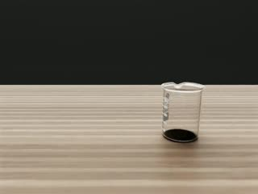 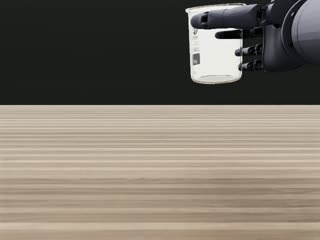 chest 首→末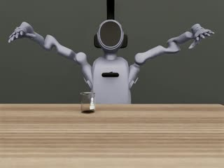 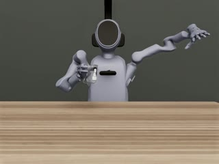 third 首→末 | 搬运倾斜：中位 4.6° / p95 5.9° / 最大 7.1° 抬升高度中位 0.136 m 起始位随机跨度 3.9×3.9 cm（100 个不同起点） 抬升：均值 0.135 m / p95 0.140 m / 最大 0.142 m | L3 硬旗标 0/100 集 压桌深度 max <1 mm 松手高度 ≤1cm |
640×480 @30 fps · h264 · 帧数一致性 ✓ 材质：资产默认材质（无覆盖） | 无 lyf_4090 …/grasp/glass_beaker_250ml/20260805_200331 | ||||||||||||||||||||
glass_cylinder_100ml 抓取 100ml 玻璃量筒 松手高度>1cm：1 集搬运倾斜最大 16.3°chest 顶部背景带跨集差异 MAD 16.4 | 100 6001 帧 @30 fps 看板 100/100 ✅️ 完成 | 样例 ep 0 · 2.0s · 80 KB · 原文件 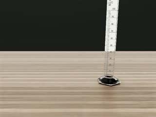 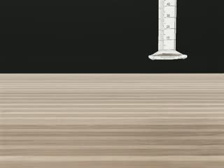 chest 首→末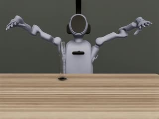 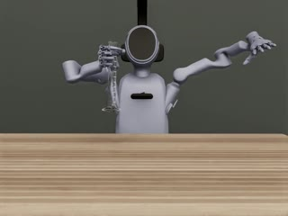 third 首→末 | 搬运倾斜：中位 5.7° / p95 6.9° / 最大 16.3° 抬升高度中位 0.132 m 起始位随机跨度 4.0×6.3 cm（100 个不同起点） 抬升：均值 0.134 m / p95 0.150 m / 最大 0.154 m | L3 硬旗标 0/100 集 压桌深度 max <1 mm 松手高度>1cm：1 集（max 1.5 cm） |
640×480 @30 fps · h264 · 帧数一致性 ✓ 材质：资产默认材质（无覆盖） | 无 lyf_4090 …/grasp/glass_cylinder_100ml/20260810_205417_episode093_excluded | ||||||||||||||||||||
plastic_cylinder_100ml 抓取 100ml 塑料量筒 松手高度>1cm：2 集搬运倾斜最大 9.9°chest 顶部背景带跨集差异 MAD 24.8 | 100 6000 帧 @30 fps 看板 100/100 ✅️ 完成 | 样例 ep 0 · 2.0s · 76 KB · 原文件 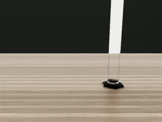 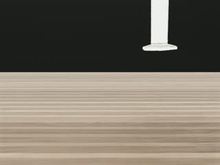 chest 首→末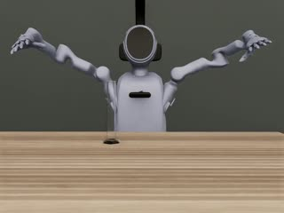 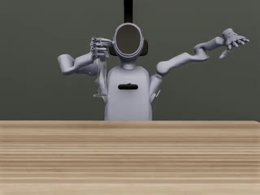 third 首→末 | 搬运倾斜：中位 6.9° / p95 8.4° / 最大 9.9° 抬升高度中位 0.176 m 起始位随机跨度 3.9×3.9 cm（100 个不同起点） 抬升：均值 0.172 m / p95 0.176 m / 最大 0.176 m | L3 硬旗标 0/100 集 压桌深度 max <1 mm 松手高度>1cm：2 集（max 2.9 cm） |
640×480 @30 fps · h264 · 帧数一致性 ✓ 材质：资产默认材质（无覆盖） | 无 lyf_4090 …/grasp/plastic_cylinder_100ml/20260806_035019 | ||||||||||||||||||||
erlenmeyer_flask 抓取锥形瓶 | 100 5000 帧 @30 fps 看板 100/100 ✅️ 完成 | 样例 ep 0 · 1.7s · 78 KB · 原文件 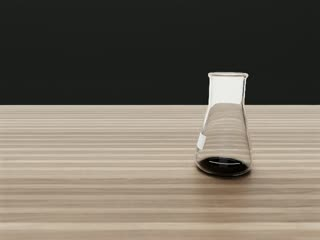 chest 首→末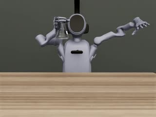 third 首→末 | 搬运倾斜：中位 1.1° / p95 2.4° / 最大 4.8° 抬升高度中位 0.281 m 起始位随机跨度 3.9×3.9 cm（100 个不同起点） 抬升：均值 0.282 m / p95 0.284 m / 最大 0.284 m | L3 硬旗标 0/100 集 压桌深度 max <1 mm 松手高度 ≤1cm |
640×480 @30 fps · h264 · 帧数一致性 ✓ 材质：资产默认材质（无覆盖） | 无 lyf_4090 …/grasp/erlenmeyer_flask/20260806_004833 | ||||||||||||||||||||
clear_volumetric_flask_250ml 抓取透明容量瓶 250ml chest 顶部背景带跨集差异 MAD 5.9 | 100 6000 帧 @30 fps 看板 100/100 ✅️ 完成 | 样例 ep 0 · 2.0s · 81 KB · 原文件 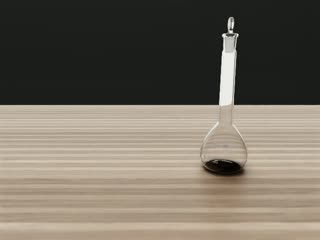 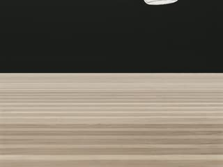 chest 首→末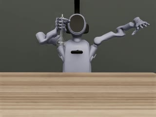 third 首→末 | 搬运倾斜：中位 0.8° / p95 1.1° / 最大 1.3° 抬升高度中位 0.234 m 起始位随机跨度 3.8×3.9 cm（100 个不同起点） 抬升：均值 0.238 m / p95 0.247 m / 最大 0.247 m | L3 硬旗标 0/100 集 压桌深度 max <1 mm 松手高度 ≤1cm |
640×480 @30 fps · h264 · 帧数一致性 ✓ 材质：资产默认材质（无覆盖） | 无 lyf_4090 …/grasp/clear_volumetric_flask_250ml/20260810_162658 | ||||||||||||||||||||
brown_volumetric_flask_250ml 抓取棕色容量瓶 250ml | 100 6000 帧 @30 fps 看板 100/100 ✅️ 完成 | 样例 ep 0 · 2.0s · 76 KB · 原文件 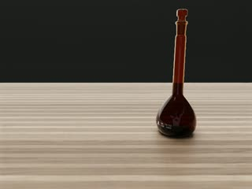 chest 首→末third 首→末 | 搬运倾斜：中位 1.2° / p95 1.5° / 最大 1.9° 抬升高度中位 0.247 m 起始位随机跨度 3.9×3.9 cm（100 个不同起点） 抬升：均值 0.245 m / p95 0.247 m / 最大 0.247 m | L3 硬旗标 0/100 集 压桌深度 max <1 mm 松手高度 ≤1cm |
640×480 @30 fps · h264 · 帧数一致性 ✓ 材质：资产默认材质（无覆盖） | 无 lyf_4090 …/grasp/brown_volumetric_flask_250ml/20260806_025815 | ||||||||||||||||||||
clear_reagent_bottle_large 抓取透明试剂瓶·大 搬运倾斜最大 10.1° | 100 5000 帧 @30 fps 看板 100/100 ✅️ 完成 | 样例 ep 0 · 1.7s · 74 KB · 原文件 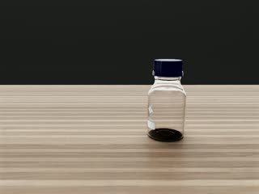 chest 首→末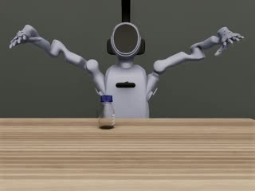 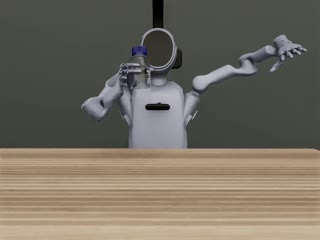 third 首→末 | 搬运倾斜：中位 4.4° / p95 9.3° / 最大 10.1° 抬升高度中位 0.249 m 起始位随机跨度 3.9×3.8 cm（100 个不同起点） 抬升：均值 0.257 m / p95 0.260 m / 最大 0.261 m | L3 硬旗标 0/100 集 压桌深度 max <1 mm 松手高度 ≤1cm |
640×480 @30 fps · h264 · 帧数一致性 ✓ 材质：资产默认材质（无覆盖） | 无 lyf_4090 …/grasp/clear_reagent_bottle_large/20260805_230123_reuse99_plus_20260810_231103_ep000 | ||||||||||||||||||||
clear_reagent_bottle_small 抓取透明试剂瓶·小 搬运倾斜最大 10.7° | 100 6000 帧 @30 fps 看板 100/100 ✅️ 完成 | 样例 ep 0 · 2.0s · 78 KB · 原文件 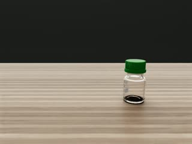 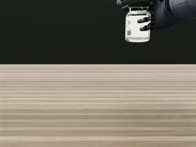 chest 首→末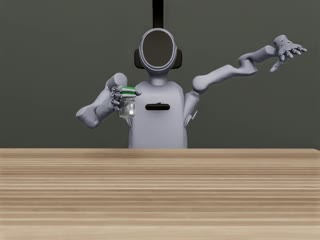 third 首→末 | 搬运倾斜：中位 2.8° / p95 9.2° / 最大 10.7° 抬升高度中位 0.155 m 起始位随机跨度 3.9×3.9 cm（100 个不同起点） 抬升：均值 0.153 m / p95 0.156 m / 最大 0.156 m | L3 硬旗标 0/100 集 压桌深度 max <1 mm 松手高度 ≤1cm |
640×480 @30 fps · h264 · 帧数一致性 ✓ 材质：资产默认材质（无覆盖） | 无 lyf_4090 …/grasp/clear_reagent_bottle_small/20260806_000209 | ||||||||||||||||||||
brown_reagent_bottle_large 抓取棕色试剂瓶·大 搬运倾斜最大 11.0° | 100 5609 帧 @30 fps 看板 100/100 ✅️ 完成 | 样例 ep 0 · 1.9s · 77 KB · 原文件 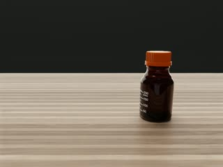 chest 首→末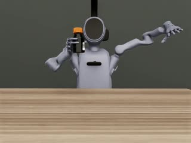 third 首→末 | 搬运倾斜：中位 5.1° / p95 9.4° / 最大 11.0° 抬升高度中位 0.250 m 起始位随机跨度 3.9×3.9 cm（100 个不同起点） 抬升：均值 0.250 m / p95 0.253 m / 最大 0.255 m | L3 硬旗标 0/100 集 压桌深度 max <1 mm 松手高度 ≤1cm |
640×480 @30 fps · h264 · 帧数一致性 ✓ 材质：资产默认材质（无覆盖） | 无 lyf_4090 …/grasp/brown_reagent_bottle_large/20260806_021104 | ||||||||||||||||||||
brown_reagent_bottle_small 抓取棕色试剂瓶·小 搬运倾斜最大 13.1° | 100 6001 帧 @30 fps 看板 100/100 ✅️ 完成 慢放衍生数据损坏待重做 | 样例 ep 0 · 2.0s · 76 KB · 原文件 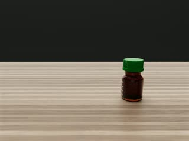 chest 首→末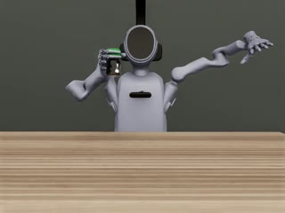 third 首→末 | 搬运倾斜：中位 4.2° / p95 9.5° / 最大 13.1° 抬升高度中位 0.264 m 起始位随机跨度 3.9×3.9 cm（100 个不同起点） 抬升：均值 0.263 m / p95 0.267 m / 最大 0.267 m | L3 硬旗标 0/100 集 压桌深度 max <1 mm 松手高度 ≤1cm |
640×480 @30 fps · h264 · 帧数一致性 ✓ 材质：资产默认材质（无覆盖） | 无 lyf_4090 …/grasp/brown_reagent_bottle_small/20260808_181113 | ||||||||||||||||||||
alcohol_lamp 抓取酒精灯 搬运倾斜最大 7.1° | 100 5799 帧 @30 fps 看板 100/100 ✅️ 完成 | 样例 ep 0 · 1.9s · 72 KB · 原文件 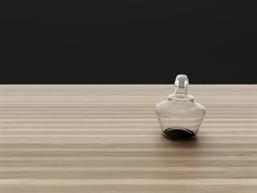 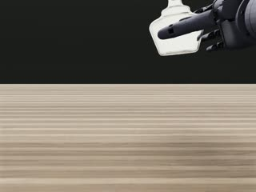 chest 首→末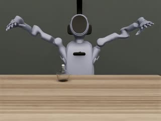 third 首→末 | 搬运倾斜：中位 4.0° / p95 5.9° / 最大 7.1° 抬升高度中位 0.151 m 起始位随机跨度 3.9×3.9 cm（100 个不同起点） 抬升：均值 0.157 m / p95 0.159 m / 最大 0.161 m | L3 硬旗标 0/100 集 压桌深度 max <1 mm 松手高度 ≤1cm |
640×480 @30 fps · h264 · 帧数一致性 ✓ 材质：资产默认材质（无覆盖） | 无 lyf_4090 …/grasp/alcohol_lamp/20260806_012801 | ||||||||||||||||||||
mortar 抓取研钵 搬运倾斜最大 7.7° | 100 6000 帧 @30 fps 看板 100/100 ✅️ 完成 | 样例 ep 0 · 2.0s · 68 KB · 原文件 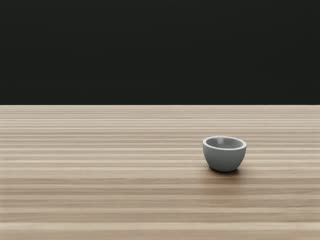 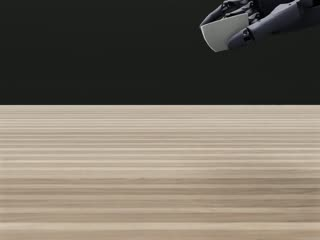 chest 首→末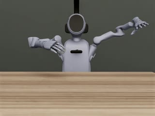 third 首→末 | 搬运倾斜：中位 5.2° / p95 6.9° / 最大 7.7° 抬升高度中位 0.177 m 起始位随机跨度 3.9×4.0 cm（100 个不同起点） 抬升：均值 0.177 m / p95 0.178 m / 最大 0.178 m | L3 硬旗标 0/100 集 压桌深度 max <1 mm 松手高度 ≤1cm |
640×480 @30 fps · h264 · 帧数一致性 ✓ 材质：资产默认材质（无覆盖） | 抓取时研钵倾斜：搬运中倾角中位 5.2°、最大 7.7°（grasp_offset 在杯沿一侧）。→ 配方级，可接受与否由 owner 定 lyf_4090 …/grasp/mortar/20260805_031702 |
pick_place 13 物体 · 13 有视频 · 0 无数据 · 14 有旗标
| 物体 | 实测集数 / 看板 | 成功轨迹样例（head | chest | third）+ 首末帧 | 任务指标 | 安全 / 物理审计 | 视频渲染质量 | 已知问题 · 数据位置 | ||||||||||||||||||||
|---|---|---|---|---|---|---|---|---|---|---|---|---|---|---|---|---|---|---|---|---|---|---|---|---|---|---|
glass_beaker_100ml 抓起 100ml 烧杯放到指定位 物体位姿未记录（target_pose 为静态目标） | 100 12024 帧 @30 fps 看板 100/100 ✅️ 完成（新门） | 样例 ep 0 · 4.0s · 116 KB · 原文件 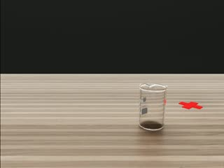 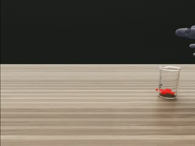 chest 首→末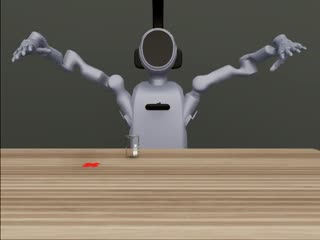 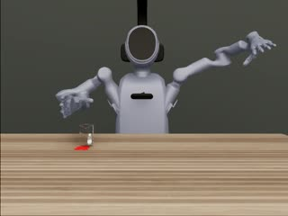 third 首→末 | 物体位姿未记录 起始位随机跨度 5.6×5.9 cm（100 个不同起点） 落点误差：均值 4.0 mm / p95 5.9 mm / 最大 6.5 mm 释放对齐误差：均值 4.0 mm / p95 5.8 mm / 最大 6.0 mm 搬运最大倾角：均值 3.2° / p95 5.4° / 最大 6.7° 抬升：均值 0.104 m / p95 0.104 m / 最大 0.104 m 落地后下压：均值 0.4 mm / p95 0.9 mm / 最大 1.0 mm | L3 硬旗标 0/100 集 压桌深度 max <1 mm 松手高度 ≤1cm 接触力事件数：均值 0 / p95 0 / 最大 0 物体线速度：均值 0.004 m/s / p95 0.006 m/s / 最大 0.008 m/s 物体角速度：均值 0.08 rad/s / p95 0.14 rad/s / 最大 0.15 rad/s 累计偏转：均值 19.96° / p95 27.43° / 最大 31.97° |
640×480 @30 fps · h264 · 帧数一致性 ✓ 材质：资产默认材质（无覆盖） | 目标 marker 未渲染：视频里的红叉是静态场景几何（0710/0715/0718 各批次、不同物体、不同 episode 首帧像素恒为 517,238），真实目标（初始位姿+固定偏移）不可见；物理落点误差 ≤8mm，但视觉上离红叉最多 15–20cm；parquet 的 target_pose 记录的是目标而非物体位姿。→ 场景/配方缺陷，需修 marker 渲染后重采（owner 决策） lyf_4090 …/pick_place/glass_beaker_100ml/20260806_043811 | ||||||||||||||||||||
glass_beaker_250ml 抓起 250ml 烧杯放到指定位 物体位姿未记录（target_pose 为静态目标） | 100 12000 帧 @30 fps 看板 100/100 ✅️ 完成（新门） | 样例 ep 0 · 4.0s · 125 KB · 原文件 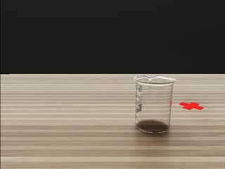 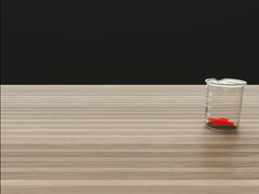 chest 首→末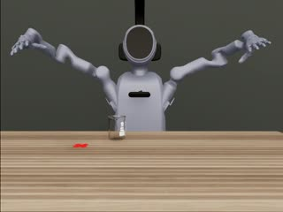 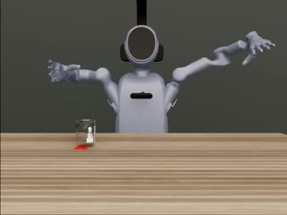 third 首→末 | 物体位姿未记录 起始位随机跨度 5.9×5.8 cm（100 个不同起点） 落点误差：均值 1.9 mm / p95 2.6 mm / 最大 2.9 mm 释放对齐误差：均值 1.9 mm / p95 2.6 mm / 最大 2.9 mm 搬运最大倾角：均值 3.2° / p95 4.0° / 最大 4.4° 抬升：均值 0.111 m / p95 0.111 m / 最大 0.111 m 落地后下压：均值 0.3 mm / p95 0.6 mm / 最大 0.7 mm | L3 硬旗标 0/100 集 压桌深度 max <1 mm 松手高度 ≤1cm 接触力事件数：均值 0 / p95 0 / 最大 0 物体线速度：均值 0.003 m/s / p95 0.005 m/s / 最大 0.007 m/s 物体角速度：均值 0.03 rad/s / p95 0.06 rad/s / 最大 0.09 rad/s 累计偏转：均值 13.94° / p95 16.19° / 最大 19.39° |
640×480 @30 fps · h264 · 帧数一致性 ✓ 材质：资产默认材质（无覆盖） | 目标 marker 未渲染：视频里的红叉是静态场景几何（0710/0715/0718 各批次、不同物体、不同 episode 首帧像素恒为 517,238），真实目标（初始位姿+固定偏移）不可见；物理落点误差 ≤8mm，但视觉上离红叉最多 15–20cm；parquet 的 target_pose 记录的是目标而非物体位姿。→ 场景/配方缺陷，需修 marker 渲染后重采（owner 决策） lyf_4090 …/pick_place/glass_beaker_250ml/20260806_093011_warmup_excluded | ||||||||||||||||||||
glass_cylinder_100ml 抓起玻璃量筒放到指定位 物体位姿未记录（target_pose 为静态目标）chest 顶部背景带跨集差异 MAD 26.9 | 100 12014 帧 @30 fps 看板 100/100 ✅️ 完成（新门） | 样例 ep 0 · 4.0s · 130 KB · 原文件 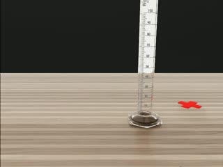 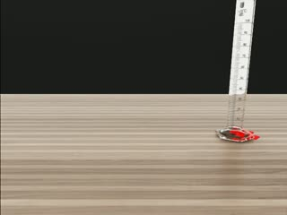 chest 首→末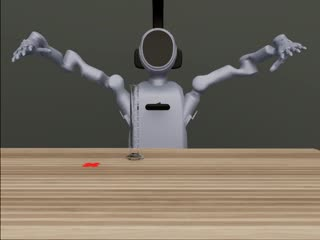 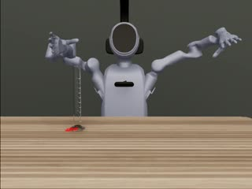 third 首→末 | 物体位姿未记录 起始位随机跨度 6.0×6.1 cm（100 个不同起点） 落点误差：均值 5.3 mm / p95 7.6 mm / 最大 7.9 mm 释放对齐误差：均值 3.9 mm / p95 5.8 mm / 最大 5.9 mm 搬运最大倾角：均值 4.4° / p95 5.3° / 最大 5.9° 抬升：均值 0.159 m / p95 0.159 m / 最大 0.162 m 落地后下压：均值 1.0 mm / p95 1.9 mm / 最大 3.3 mm | L3 硬旗标 0/100 集 压桌深度 max <1 mm 松手高度 ≤1cm 接触力事件数：均值 0 / p95 0 / 最大 0 物体线速度：均值 0.004 m/s / p95 0.009 m/s / 最大 0.011 m/s 物体角速度：均值 0.07 rad/s / p95 0.19 rad/s / 最大 0.25 rad/s 累计偏转：均值 19.67° / p95 25.42° / 最大 27.97° |
640×480 @30 fps · h264 · 帧数一致性 ✓ 材质：资产默认材质（无覆盖） | 目标 marker 未渲染：视频里的红叉是静态场景几何（0710/0715/0718 各批次、不同物体、不同 episode 首帧像素恒为 517,238），真实目标（初始位姿+固定偏移）不可见；物理落点误差 ≤8mm，但视觉上离红叉最多 15–20cm；parquet 的 target_pose 记录的是目标而非物体位姿。→ 场景/配方缺陷，需修 marker 渲染后重采（owner 决策） lyf_4090 …/pick_place/glass_cylinder_100ml/20260806_110511_reuse98_plus_20260810_233044_eps000_001 | ||||||||||||||||||||
erlenmeyer_flask 抓起锥形瓶放到指定位 物体位姿未记录（target_pose 为静态目标） | 100 12000 帧 @30 fps 看板 100/100 ✅️ 完成（新门） | 样例 ep 0 · 4.0s · 134 KB · 原文件 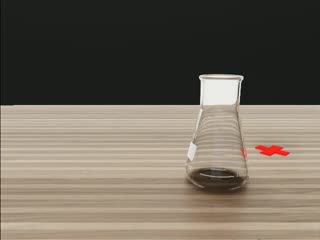 chest 首→末third 首→末 | 物体位姿未记录 起始位随机跨度 5.9×5.9 cm（100 个不同起点） 落点误差：均值 2.1 mm / p95 3.6 mm / 最大 5.0 mm 释放对齐误差：均值 2.1 mm / p95 2.8 mm / 最大 3.0 mm 搬运最大倾角：均值 3.5° / p95 3.9° / 最大 4.4° 抬升：均值 0.265 m / p95 0.265 m / 最大 0.265 m 落地后下压：均值 0.1 mm / p95 0.6 mm / 最大 1.6 mm | L3 硬旗标 0/100 集 压桌深度 max <1 mm 松手高度 ≤1cm 接触力事件数：均值 0 / p95 0 / 最大 0 物体线速度：均值 0.002 m/s / p95 0.004 m/s / 最大 0.008 m/s 物体角速度：均值 0.02 rad/s / p95 0.05 rad/s / 最大 0.08 rad/s 累计偏转：均值 20.19° / p95 23.05° / 最大 24.45° |
640×480 @30 fps · h264 · 帧数一致性 ✓ 材质：资产默认材质（无覆盖） | 目标 marker 未渲染：视频里的红叉是静态场景几何（0710/0715/0718 各批次、不同物体、不同 episode 首帧像素恒为 517,238），真实目标（初始位姿+固定偏移）不可见；物理落点误差 ≤8mm，但视觉上离红叉最多 15–20cm；parquet 的 target_pose 记录的是目标而非物体位姿。→ 场景/配方缺陷，需修 marker 渲染后重采（owner 决策） lyf_4090 …/pick_place/erlenmeyer_flask/20260808_190027_warmup_excluded | ||||||||||||||||||||
clear_volumetric_flask_250ml 抓起透明容量瓶放到指定位 物体位姿未记录（target_pose 为静态目标）chest 顶部背景带跨集差异 MAD 5.5 | 100 12000 帧 @30 fps 看板 100/100 ✅️ 完成（新门） | 样例 ep 0 · 4.0s · 122 KB · 原文件 | 物体位姿未记录 起始位随机跨度 5.7×5.9 cm（100 个不同起点） 落点误差：均值 7.7 mm / p95 8.0 mm / 最大 8.0 mm 释放对齐误差：均值 1.6 mm / p95 2.9 mm / 最大 3.5 mm 搬运最大倾角：均值 4.5° / p95 4.8° / 最大 4.9° 抬升：均值 0.269 m / p95 0.269 m / 最大 0.269 m 落地后下压：均值 0.5 mm / p95 0.9 mm / 最大 1.9 mm | L3 硬旗标 0/100 集 压桌深度 max <1 mm 松手高度 ≤1cm 接触力事件数：均值 0 / p95 0 / 最大 0 物体线速度：均值 0.004 m/s / p95 0.008 m/s / 最大 0.011 m/s 物体角速度：均值 0.04 rad/s / p95 0.14 rad/s / 最大 0.18 rad/s 累计偏转：均值 15.28° / p95 16.70° / 最大 17.65° |
640×480 @30 fps · h264 · 帧数一致性 ✓ 材质：资产默认材质（无覆盖） | 目标 marker 未渲染：视频里的红叉是静态场景几何（0710/0715/0718 各批次、不同物体、不同 episode 首帧像素恒为 517,238），真实目标（初始位姿+固定偏移）不可见；物理落点误差 ≤8mm，但视觉上离红叉最多 15–20cm；parquet 的 target_pose 记录的是目标而非物体位姿。→ 场景/配方缺陷，需修 marker 渲染后重采（owner 决策） lyf_4090 …/pick_place/clear_volumetric_flask_250ml/20260806_190005 | ||||||||||||||||||||
brown_volumetric_flask_250ml 抓起棕色容量瓶放到指定位 物体位姿未记录（target_pose 为静态目标）chest 顶部背景带跨集差异 MAD 3.7 | 100 12000 帧 @30 fps 看板 100/100 ✅️ 完成（新门） | 样例 ep 0 · 4.0s · 124 KB · 原文件 | 物体位姿未记录 起始位随机跨度 5.9×5.9 cm（100 个不同起点） 落点误差：均值 4.7 mm / p95 6.3 mm / 最大 7.3 mm 释放对齐误差：均值 3.8 mm / p95 4.8 mm / 最大 5.9 mm 搬运最大倾角：均值 3.7° / p95 4.1° / 最大 4.7° 抬升：均值 0.159 m / p95 0.159 m / 最大 0.159 m 落地后下压：均值 1.1 mm / p95 1.8 mm / 最大 1.9 mm | L3 硬旗标 0/100 集 压桌深度 max <1 mm 松手高度 ≤1cm 接触力事件数：均值 0 / p95 0 / 最大 0 物体线速度：均值 0.003 m/s / p95 0.007 m/s / 最大 0.011 m/s 物体角速度：均值 0.02 rad/s / p95 0.05 rad/s / 最大 0.18 rad/s 累计偏转：均值 17.52° / p95 18.91° / 最大 19.59° |
640×480 @30 fps · h264 · 帧数一致性 ✓ 材质：资产默认材质（无覆盖） | 目标 marker 未渲染：视频里的红叉是静态场景几何（0710/0715/0718 各批次、不同物体、不同 episode 首帧像素恒为 517,238），真实目标（初始位姿+固定偏移）不可见；物理落点误差 ≤8mm，但视觉上离红叉最多 15–20cm；parquet 的 target_pose 记录的是目标而非物体位姿。→ 场景/配方缺陷，需修 marker 渲染后重采（owner 决策） lyf_4090 …/pick_place/brown_volumetric_flask_250ml/20260808_225217_warmup_excluded | ||||||||||||||||||||
brown_reagent_bottle_large 抓起棕色试剂瓶·大放到指定位 物体位姿未记录（target_pose 为静态目标） | 100 12010 帧 @30 fps 看板 64/100 🔄 新门重采中（发布门 100 在账） | 样例 ep 0 · 4.0s · 163 KB · 原文件 | 物体位姿未记录 起始位随机跨度 2.4×6.0 cm（100 个不同起点） 落点误差：均值 5.6 mm / p95 7.8 mm / 最大 7.9 mm 释放对齐误差：均值 2.9 mm / p95 5.4 mm / 最大 6.0 mm 搬运最大倾角：均值 9.7° / p95 10.7° / 最大 11.8° 抬升：均值 0.273 m / p95 0.275 m / 最大 0.276 m 落地后下压：均值 0.0 mm / p95 0.0 mm / 最大 0.0 mm | L3 硬旗标 0/100 集 压桌深度 max <1 mm 松手高度 ≤1cm 接触力事件数：均值 0 / p95 0 / 最大 0 物体线速度：均值 0.003 m/s / p95 0.006 m/s / 最大 0.012 m/s 物体角速度：均值 0.02 rad/s / p95 0.06 rad/s / 最大 0.12 rad/s 累计偏转：均值 36.02° / p95 41.12° / 最大 44.61° |
640×480 @30 fps · h264 · 帧数一致性 ✓ 材质：资产默认材质（无覆盖） | 目标 marker 未渲染：视频里的红叉是静态场景几何（0710/0715/0718 各批次、不同物体、不同 episode 首帧像素恒为 517,238），真实目标（初始位姿+固定偏移）不可见；物理落点误差 ≤8mm，但视觉上离红叉最多 15–20cm；parquet 的 target_pose 记录的是目标而非物体位姿。→ 场景/配方缺陷，需修 marker 渲染后重采（owner 决策） lyf_4090 …/pick_place/brown_reagent_bottle_large/20260902_070024_episode000_excluded | ||||||||||||||||||||
alcohol_lamp 抓起酒精灯放到指定位 daisi_4090 line copy (0715 batch) 搬运倾斜最大 14.5°head 顶部背景带跨集差异 MAD 6.3 | 50 6450 帧 @30 fps 看板 50/100 ✅️ 发布门 | 样例 ep 0 · 4.3s · 136 KB · 原文件 | 搬运倾斜：中位 13.0° / p95 14.1° / 最大 14.5° 抬升高度中位 0.124 m 起始位随机跨度 3.8×3.6 cm（50 个不同起点） | L3 硬旗标 0/50 集 压桌深度 max <1 mm 松手高度 ≤1cm |
640×480 @30 fps · h264 · 帧数一致性 ✓ 材质：资产默认材质（无覆盖） | 目标 marker 未渲染：视频里的红叉是静态场景几何（0710/0715/0718 各批次、不同物体、不同 episode 首帧像素恒为 517,238），真实目标（初始位姿+固定偏移）不可见；物理落点误差 ≤8mm，但视觉上离红叉最多 15–20cm；parquet 的 target_pose 记录的是目标而非物体位姿。→ 场景/配方缺陷，需修 marker 渲染后重采（owner 决策） lyf_4090 …/psibot/pick_place/alcohol_lamp | ||||||||||||||||||||
alcohol_lamp 抓起酒精灯放到指定位 top-up 100（fork） | — — 帧 @— fps 看板 — 同上 | no dataset (state=failed) | 未计算 | L3 未跑 | 未计算 | 目标 marker 未渲染：视频里的红叉是静态场景几何（0710/0715/0718 各批次、不同物体、不同 episode 首帧像素恒为 517,238），真实目标（初始位姿+固定偏移）不可见；物理落点误差 ≤8mm，但视觉上离红叉最多 15–20cm；parquet 的 target_pose 记录的是目标而非物体位姿。→ 场景/配方缺陷，需修 marker 渲染后重采（owner 决策） lyf_4090 …/ | ||||||||||||||||||||
brown_reagent_bottle_small 抓起棕色试剂瓶·小放到指定位 top-up 100（fork） 物体位姿未记录（target_pose 为静态目标） | 100 12000 帧 @30 fps 看板 50/100 ✅️ 发布门 | 样例 ep 0 · 4.0s · 123 KB · 原文件 | 物体位姿未记录 起始位随机跨度 5.9×5.9 cm（100 个不同起点） 落点误差：均值 2.6 mm / p95 3.5 mm / 最大 6.5 mm 释放对齐误差：均值 2.6 mm / p95 3.5 mm / 最大 3.8 mm 搬运最大倾角：均值 3.3° / p95 3.7° / 最大 9.5° 抬升：均值 0.280 m / p95 0.281 m / 最大 0.281 m 落地后下压：均值 0.4 mm / p95 1.0 mm / 最大 1.6 mm | L3 硬旗标 0/100 集 压桌深度 max <1 mm 松手高度 ≤1cm 接触力事件数：均值 0 / p95 0 / 最大 0 物体线速度：均值 0.003 m/s / p95 0.005 m/s / 最大 0.011 m/s 物体角速度：均值 0.03 rad/s / p95 0.07 rad/s / 最大 0.17 rad/s 累计偏转：均值 14.22° / p95 20.20° / 最大 31.57° |
640×480 @30 fps · h264 · 帧数一致性 ✓ 材质：资产默认材质（无覆盖） | 目标 marker 未渲染：视频里的红叉是静态场景几何（0710/0715/0718 各批次、不同物体、不同 episode 首帧像素恒为 517,238），真实目标（初始位姿+固定偏移）不可见；物理落点误差 ≤8mm，但视觉上离红叉最多 15–20cm；parquet 的 target_pose 记录的是目标而非物体位姿。→ 场景/配方缺陷，需修 marker 渲染后重采（owner 决策） lyf_4090 …/pick_place/brown_reagent_bottle_small/20260904_082003_episode000_excluded | ||||||||||||||||||||
clear_reagent_bottle_large 抓起透明试剂瓶·大放到指定位 top-up 100（fork） 物体位姿未记录（target_pose 为静态目标） | 100 12023 帧 @30 fps 看板 50/100 ✅️ 发布门 | 样例 ep 0 · 4.0s · 166 KB · 原文件 | 物体位姿未记录 起始位随机跨度 2.2×5.9 cm（100 个不同起点） 落点误差：均值 2.0 mm / p95 2.9 mm / 最大 3.1 mm 释放对齐误差：均值 2.9 mm / p95 5.6 mm / 最大 5.8 mm 搬运最大倾角：均值 2.6° / p95 4.2° / 最大 4.9° 抬升：均值 0.273 m / p95 0.274 m / 最大 0.274 m 落地后下压：均值 0.0 mm / p95 0.0 mm / 最大 0.0 mm | L3 硬旗标 0/100 集 压桌深度 max <1 mm 松手高度 ≤1cm 接触力事件数：均值 0 / p95 0 / 最大 0 物体线速度：均值 0.003 m/s / p95 0.006 m/s / 最大 0.009 m/s 物体角速度：均值 0.02 rad/s / p95 0.06 rad/s / 最大 0.10 rad/s 累计偏转：均值 15.68° / p95 20.85° / 最大 23.33° |
640×480 @30 fps · h264 · 帧数一致性 ✓ 材质：资产默认材质（无覆盖） | 目标 marker 未渲染：视频里的红叉是静态场景几何（0710/0715/0718 各批次、不同物体、不同 episode 首帧像素恒为 517,238），真实目标（初始位姿+固定偏移）不可见；物理落点误差 ≤8mm，但视觉上离红叉最多 15–20cm；parquet 的 target_pose 记录的是目标而非物体位姿。→ 场景/配方缺陷，需修 marker 渲染后重采（owner 决策） lyf_4090 …/pick_place/clear_reagent_bottle_large/20260904_034801_episode000_excluded | ||||||||||||||||||||
clear_reagent_bottle_small 抓起透明试剂瓶·小放到指定位 top-up 100（fork） 物体位姿未记录（target_pose 为静态目标） | 100 12000 帧 @30 fps 看板 50/100 ✅️ 发布门 | 样例 ep 0 · 4.0s · 125 KB · 原文件 | 物体位姿未记录 起始位随机跨度 5.9×5.9 cm（100 个不同起点） 落点误差：均值 3.2 mm / p95 4.1 mm / 最大 6.3 mm 释放对齐误差：均值 3.1 mm / p95 4.0 mm / 最大 4.2 mm 搬运最大倾角：均值 6.7° / p95 7.4° / 最大 9.4° 抬升：均值 0.163 m / p95 0.163 m / 最大 0.163 m 落地后下压：均值 2.4 mm / p95 3.1 mm / 最大 3.2 mm | L3 硬旗标 0/100 集 压桌深度 max <1 mm 松手高度 ≤1cm 接触力事件数：均值 0 / p95 0 / 最大 0 物体线速度：均值 0.003 m/s / p95 0.005 m/s / 最大 0.006 m/s 物体角速度：均值 0.03 rad/s / p95 0.07 rad/s / 最大 0.11 rad/s 累计偏转：均值 19.37° / p95 21.01° / 最大 45.82° |
640×480 @30 fps · h264 · 帧数一致性 ✓ 材质：资产默认材质（无覆盖） | 目标 marker 未渲染：视频里的红叉是静态场景几何（0710/0715/0718 各批次、不同物体、不同 episode 首帧像素恒为 517,238），真实目标（初始位姿+固定偏移）不可见；物理落点误差 ≤8mm，但视觉上离红叉最多 15–20cm；parquet 的 target_pose 记录的是目标而非物体位姿。→ 场景/配方缺陷，需修 marker 渲染后重采（owner 决策） lyf_4090 …/pick_place/clear_reagent_bottle_small/20260904_094729_episode000_excluded | ||||||||||||||||||||
plastic_cylinder_100ml 抓起塑料量筒放到指定位 top-up 100（fork） 物体位姿未记录（target_pose 为静态目标）chest 顶部背景带跨集差异 MAD 32.1 | 100 12000 帧 @30 fps 看板 50/100 ✅️ 发布门 | 样例 ep 0 · 4.0s · 119 KB · 原文件 | 物体位姿未记录 起始位随机跨度 5.1×5.9 cm（100 个不同起点） 落点误差：均值 4.0 mm / p95 5.4 mm / 最大 6.0 mm 释放对齐误差：均值 4.0 mm / p95 5.5 mm / 最大 6.0 mm 搬运最大倾角：均值 2.9° / p95 3.7° / 最大 4.4° 抬升：均值 0.157 m / p95 0.159 m / 最大 0.159 m 落地后下压：均值 0.8 mm / p95 1.9 mm / 最大 2.4 mm | L3 硬旗标 0/100 集 压桌深度 max <1 mm 松手高度 ≤1cm 接触力事件数：均值 0 / p95 0 / 最大 0 物体线速度：均值 0.004 m/s / p95 0.006 m/s / 最大 0.007 m/s 物体角速度：均值 0.03 rad/s / p95 0.05 rad/s / 最大 0.08 rad/s 累计偏转：均值 23.14° / p95 27.93° / 最大 28.54° |
640×480 @30 fps · h264 · 帧数一致性 ✓ 材质：资产默认材质（无覆盖） | 目标 marker 未渲染：视频里的红叉是静态场景几何（0710/0715/0718 各批次、不同物体、不同 episode 首帧像素恒为 517,238），真实目标（初始位姿+固定偏移）不可见；物理落点误差 ≤8mm，但视觉上离红叉最多 15–20cm；parquet 的 target_pose 记录的是目标而非物体位姿。→ 场景/配方缺陷，需修 marker 渲染后重采（owner 决策） lyf_4090 …/pick_place/plastic_cylinder_100ml/20260904_001534_episode000_excluded | ||||||||||||||||||||
mortar 抓起研钵放到指定位 物体位姿未记录（target_pose 为静态目标） | 100 12000 帧 @30 fps 看板 0/100 ⚠️ ❌ 仅 50 历史候选未过严格门（owner 矩阵在账 100，待对账） | 样例 ep 0 · 4.0s · 109 KB · 原文件 | 物体位姿未记录 起始位随机跨度 4.9×5.9 cm（100 个不同起点） 落点误差：均值 4.3 mm / p95 7.3 mm / 最大 7.9 mm 释放对齐误差：均值 4.3 mm / p95 7.3 mm / 最大 7.9 mm 搬运最大倾角：均值 22.9° / p95 28.6° / 最大 31.2° 抬升：均值 0.100 m / p95 0.101 m / 最大 0.102 m 落地后下压：均值 0.5 mm / p95 0.5 mm / 最大 0.5 mm | L3 硬旗标 0/100 集 压桌深度 max <1 mm 松手高度 ≤1cm 接触力事件数：均值 0 / p95 0 / 最大 0 物体线速度：均值 0.002 m/s / p95 0.004 m/s / 最大 0.004 m/s 物体角速度：均值 0.08 rad/s / p95 0.15 rad/s / 最大 0.23 rad/s 累计偏转：均值 75.95° / p95 87.98° / 最大 102.82° |
640×480 @30 fps · h264 · 帧数一致性 ✓ 材质：资产默认材质（无覆盖） | 目标 marker 未渲染：视频里的红叉是静态场景几何（0710/0715/0718 各批次、不同物体、不同 episode 首帧像素恒为 517,238），真实目标（初始位姿+固定偏移）不可见；物理落点误差 ≤8mm，但视觉上离红叉最多 15–20cm；parquet 的 target_pose 记录的是目标而非物体位姿。→ 场景/配方缺陷，需修 marker 渲染后重采（owner 决策） lyf_4090 …/pick_place/mortar/20260827_084508 |
pour 2 物体 · 2 有视频 · 0 无数据
| 物体 | 实测集数 / 看板 | 成功轨迹样例（head | chest | third）+ 首末帧 | 任务指标 | 安全 / 物理审计 | 视频渲染质量 | 已知问题 · 数据位置 | ||||||||||||||||||||
|---|---|---|---|---|---|---|---|---|---|---|---|---|---|---|---|---|---|---|---|---|---|---|---|---|---|---|
glass_beaker_100ml 抓起 100ml 烧杯向目标容器倾倒 daisi_4090 line copy (0715 batch) chest 码率 406 kbpshead 码率 414 kbpshead 顶部背景带跨集差异 MAD 4.1third 码率 492 kbps | 50 13450 帧 @30 fps 看板 新门 0/100 发布门旧账 50 ❌ 新落杯门重采未开始（0/40 试跑失败，配方待修） | 样例 ep 0 · 9.0s · 218 KB · 原文件 | 搬运倾斜：中位 4.2° / p95 4.7° / 最大 5.0° 抬升高度中位 0.176 m 起始位随机跨度 0.0×0.0 cm（6 个不同起点） | L3 硬旗标 0/50 集 压桌深度 max <1 mm 松手高度 ≤1cm |
640×480 @30 fps · h264 · 帧数一致性 ✓ 材质：资产默认材质（无覆盖） | 无 lyf_4090 …/psibot/pour/glass_beaker_100ml | ||||||||||||||||||||
glass_cylinder_100ml 抓起量筒向目标容器倾倒 | — — 帧 @— fps 看板 新门 0/100 发布门旧账 50 — 等 beaker 配方定型 | no dataset (state=failed) | 未计算 | L3 未跑 | 未计算 | 无 lyf_4090 …/ | ||||||||||||||||||||
glass_cylinder_100ml 抓起量筒向目标容器倾倒 daisi_4090 line copy (0715 batch) 搬运倾斜最大 20.9°（任务固有）head 顶部背景带跨集差异 MAD 3.5 | 50 13450 帧 @30 fps 看板 — 同上 | 样例 ep 0 · 9.0s · 168 KB · 原文件 | 搬运倾斜：中位 13.6° / p95 17.3° / 最大 20.9° 抬升高度中位 0.140 m 起始位随机跨度 0.0×0.0 cm（2 个不同起点） | L3 硬旗标 0/50 集 压桌深度 max <1 mm 松手高度 ≤1cm |
640×480 @30 fps · h264 · 帧数一致性 ✓ 材质：资产默认材质（无覆盖） | 无 lyf_4090 …/psibot/pour/glass_cylinder_100ml |
press 1 物体 · 1 有视频 · 0 无数据
| 物体 | 实测集数 / 看板 | 成功轨迹样例（head | chest | third）+ 首末帧 | 任务指标 | 安全 / 物理审计 | 视频渲染质量 | 已知问题 · 数据位置 | ||||||||||||||||||||
|---|---|---|---|---|---|---|---|---|---|---|---|---|---|---|---|---|---|---|---|---|---|---|---|---|---|---|
high_speed_centrifuge 按下高速离心机开关 chest 顶部背景带跨集差异 MAD 4.2 | 100 27800 帧 @30 fps 看板 100/100 ✅️ 完成 | 样例 ep 0 · 9.3s · 133 KB · 原文件 | 固定物体（无位姿指标） 起始位随机跨度 2.0×2.0 cm（100 个不同起点） | L3 硬旗标 0/100 集 压桌深度 max <1 mm 松手高度 ≤1cm |
640×480 @30 fps · h264 · 帧数一致性 ✓ 材质：资产默认材质（无覆盖） | head/chest 相机视角偏斜（owner 09-05 指出；chest 相机跨集背景 MAD 4.2 为全表最高）。→ 修相机合同后重采 lyf_4090 …/press/high_speed_centrifuge/20260807_022552 |
open 2 物体 · 2 有视频 · 0 无数据
| 物体 | 实测集数 / 看板 | 成功轨迹样例（head | chest | third）+ 首末帧 | 任务指标 | 安全 / 物理审计 | 视频渲染质量 | 已知问题 · 数据位置 | ||||||||||||||||||||
|---|---|---|---|---|---|---|---|---|---|---|---|---|---|---|---|---|---|---|---|---|---|---|---|---|---|---|
reagent_cabinet_door 拉开试剂柜门 daisi_4090 line copy (0715 batch) | 50 7011 帧 @30 fps 看板 50/100 ✅️ 完成 | 样例 ep 0 · 4.5s · 132 KB · 原文件 | 物体位姿未记录 起始位随机跨度 0.0×0.0 cm（1 个不同起点） | L3 硬旗标 0/50 集 压桌深度 max <1 mm 松手高度 ≤1cm |
640×480 @30 fps · h264 · 帧数一致性 ✓ 材质：资产默认材质（无覆盖） | 无 lyf_4090 …/psibot/open/reagent_cabinet_open | ||||||||||||||||||||
drying_oven_door 拉开烘箱门 daisi_4090 line copy (0715 batch) chest 清晰度低 86third 顶部背景带跨集差异 MAD 6.0 | 32 4455 帧 @30 fps 看板 32/100 ❌ 缺 18；峰值力 82N 超 25N 安全门待修复（daisi_4090 线） | 样例 ep 0 · 4.6s · 130 KB · 原文件 | 物体位姿未记录 起始位随机跨度 0.0×0.0 cm（1 个不同起点） | L3 硬旗标 0/32 集 压桌深度 max <1 mm 松手高度 ≤1cm |
640×480 @30 fps · h264 · 帧数一致性 ✓ 材质：资产默认材质（无覆盖） | 无 lyf_4090 …/psibot/open/oven_open |
close 2 物体 · 2 有视频 · 0 无数据
| 物体 | 实测集数 / 看板 | 成功轨迹样例（head | chest | third）+ 首末帧 | 任务指标 | 安全 / 物理审计 | 视频渲染质量 | 已知问题 · 数据位置 | ||||||||||||||||||||
|---|---|---|---|---|---|---|---|---|---|---|---|---|---|---|---|---|---|---|---|---|---|---|---|---|---|---|
drying_oven_door 关上烘箱门 daisi_4090 line copy (0715 batch) chest 码率 762 kbpschest 顶部背景带跨集差异 MAD 37.2head 码率 1376 kbpshead 顶部背景带跨集差异 MAD 33.8third 顶部背景带跨集差异 MAD 48.2 | 50 9672 帧 @30 fps 看板 50/100 ✅️ 完成（31 daisi + 19 bjxy） | 样例 ep 0 · 6.5s · 129 KB · 原文件 | 物体位姿未记录 起始位随机跨度 0.0×0.0 cm（1 个不同起点） | L3 硬旗标 0/50 集 压桌深度 max <1 mm 松手高度 ≤1cm |
640×480 @30 fps · h264 · 帧数一致性 ✓ 材质：资产默认材质（无覆盖） | 无 lyf_4090 …/psibot/close/oven_close | ||||||||||||||||||||
reagent_cabinet_door 关上试剂柜门 daisi_4090 line copy (0715 batch) | 50 6463 帧 @30 fps 看板 50/100 ✅️ 完成 | 样例 ep 0 · 4.3s · 142 KB · 原文件 | 物体位姿未记录 起始位随机跨度 0.0×0.0 cm（1 个不同起点） | L3 硬旗标 0/50 集 压桌深度 max <1 mm 松手高度 ≤1cm |
640×480 @30 fps · h264 · 帧数一致性 ✓ 材质：资产默认材质（无覆盖） | 无 lyf_4090 …/psibot/close/reagent_cabinet_close |
stack 2 物体 · 2 有视频 · 0 无数据 · 2 有旗标
| 物体 | 实测集数 / 看板 | 成功轨迹样例（head | chest | third）+ 首末帧 | 任务指标 | 安全 / 物理审计 | 视频渲染质量 | 已知问题 · 数据位置 | ||||||||||||||||||||
|---|---|---|---|---|---|---|---|---|---|---|---|---|---|---|---|---|---|---|---|---|---|---|---|---|---|---|
glass_beaker_100ml 将 100ml 小烧杯叠放进 250ml 大烧杯 L3 硬旗标 4 集松手高度>1cm：3 集搬运倾斜 139° | 100 36000 帧 @30 fps 看板 100/100 ✅️ 完成 | 样例 ep 0 · 12.0s · 225 KB · 原文件 | 搬运倾斜：中位 12.4° / p95 43.6° / 最大 139.3° 抬升高度中位 0.238 m 起始位随机跨度 1.7×1.3 cm（100 个不同起点） 抬升：均值 0.157 m / p95 0.157 m / 最大 0.159 m | L3 硬旗标 4/100 集：ep 12,52,63,76 压桌深度 max <1 mm 松手高度>1cm：3 集（max 22.5 cm） |
640×480 @30 fps · h264 · 帧数一致性 ✓ 材质：资产默认材质（无覆盖） | L3：ep12/52/76 释放后烧杯黏附被带起再掉回，ep63 翻滚 139°。→ 剔除或补采 4 集 lyf_4090 …/stack/glass_beaker_100ml/20260816_054050 | ||||||||||||||||||||
glass_beaker_250ml_stack 将 250ml 烧杯放置到铁架台上 L3 硬旗标 100 集松手高度>1cm：100 集搬运倾斜 74° | 100 36000 帧 @30 fps 看板 100/100 ✅️ 完成 | 样例 ep 0 · 12.0s · 211 KB · 原文件 | 搬运倾斜：中位 20.3° / p95 29.4° / 最大 73.8° 抬升高度中位 0.258 m 起始位随机跨度 1.2×1.2 cm（100 个不同起点） 抬升：均值 0.003 m / p95 0.004 m / 最大 0.004 m | L3 硬旗标 100/100 集：ep 0,1,2,3,4,5,6,7… 压桌深度 max <1 mm 松手高度>1cm：100 集（max 8.6 cm） |
640×480 @30 fps · h264 · 帧数一致性 ✓ 材质：资产默认材质（无覆盖） | 0718 重采 100/100 为 8cm 高处「丢入式」堆叠（撞击 1.1–1.7 m/s），0710 发布版无此行为。→ 回退配方或 owner 接受 lyf_4090 …/stack/glass_beaker_250ml_stack/20260817_000537 |
handover 5 物体 · 4 有视频 · 0 无数据 · 2 有旗标
| 物体 | 实测集数 / 看板 | 成功轨迹样例（head | chest | third）+ 首末帧 | 任务指标 | 安全 / 物理审计 | 视频渲染质量 | 已知问题 · 数据位置 | ||||||||||||||||||||
|---|---|---|---|---|---|---|---|---|---|---|---|---|---|---|---|---|---|---|---|---|---|---|---|---|---|---|
clear_volumetric_flask_250ml 双手交接透明容量瓶 | — — 帧 @— fps 看板 100 🔄 自动 PASS，待人工终审 | no dataset (state=running) | 未计算 | L3 未跑 | 未计算 | 无 lyf_4090 …/ | ||||||||||||||||||||
glass_cylinder_500ml 双手交接 500ml 量筒 daisi_4090 line copy (0715 batch) 搬运倾斜最大 14.1°（任务固有）head 顶部背景带跨集差异 MAD 3.2 | 50 11600 帧 @30 fps 看板 50/100 ✅️ 发布门 | 样例 ep 0 · 7.7s · 268 KB · 原文件 | 搬运倾斜：中位 11.3° / p95 13.3° / 最大 14.1° 抬升高度中位 0.163 m 起始位随机跨度 0.0×0.0 cm（1 个不同起点） | L3 硬旗标 0/50 集 压桌深度 max <1 mm 松手高度 ≤1cm |
640×480 @30 fps · h264 · 帧数一致性 ✓ 材质：资产默认材质（无覆盖） | 无 lyf_4090 …/psibot/handover/glass_graduated_cylinder_500ml | ||||||||||||||||||||
plastic_cylinder_100ml 双手交接塑料量筒 daisi_4090 line copy (0715 batch) L3 硬旗标 6 集松手高度>1cm：6 集搬运倾斜最大 38.7°（任务固有） | 50 23025 帧 @30 fps 看板 50/100 ✅️ 发布门 | 样例 ep 0 · 15.3s · 413 KB · 原文件 | 搬运倾斜：中位 16.2° / p95 29.1° / 最大 38.7° 抬升高度中位 0.270 m 起始位随机跨度 0.1×0.3 cm（40 个不同起点） | L3 硬旗标 6/50 集：ep 1,10,12,24,34,43 压桌深度 max 2.6 mm 松手高度>1cm：6 集（max 27.0 cm） |
640×480 @30 fps · h264 · 帧数一致性 ✓ 材质：资产默认材质（无覆盖） | daisi 0715 副本 L3：6/50 集有硬旗标（坠落/速度） lyf_4090 …/psibot/handover/plastic_cylinder_100ml | ||||||||||||||||||||
brown_volumetric_flask_250ml 双手交接棕色容量瓶 搬运倾斜最大 27.7°（任务固有）head 顶部背景带跨集差异 MAD 8.8chest 顶部背景带跨集差异 MAD 3.1 | 100 74134 帧 @30 fps 看板 50/100 ✅️ 发布门 | 样例 ep 0 · 24.3s · 451 KB · 原文件 | 搬运倾斜：中位 18.3° / p95 23.3° / 最大 27.7° 抬升高度中位 0.109 m 起始位随机跨度 1.9×1.9 cm（100 个不同起点） | L3 硬旗标 0/100 集 压桌深度 max <1 mm 松手高度 ≤1cm |
640×480 @30 fps · h264 · 帧数一致性 ✓ 材质：资产默认材质（无覆盖） | 无 lyf_4090 …/handover/brown_volumetric_flask_250ml/20260902_132948 | ||||||||||||||||||||
glass_cylinder_100ml 双手交接 100ml 量筒 L3 硬旗标 1 集搬运倾斜最大 54.8°（任务固有）chest 顶部背景带跨集差异 MAD 10.7 | 100 71457 帧 @30 fps 看板 0 ⚠️ 🔄 历史 100 审计失败（视频质量），新门续采复核中（10→101，lyf_4090 运行） | 样例 ep 0 · 24.2s · 528 KB · 原文件 | 搬运倾斜：中位 20.2° / p95 35.0° / 最大 54.8° 抬升高度中位 0.091 m 起始位随机跨度 2.0×2.0 cm（100 个不同起点） | L3 硬旗标 1/100 集：ep 19 压桌深度 max <1 mm 松手高度 ≤1cm |
640×480 @30 fps · h264 · 帧数一致性 ✓ 材质：资产默认材质（无覆盖） | 无 lyf_4090 …/handover/glass_cylinder_100ml/20260831_181544_episode000_excluded |
bimanual_grasp 3 物体 · 3 有视频 · 0 无数据
| 物体 | 实测集数 / 看板 | 成功轨迹样例（head | chest | third）+ 首末帧 | 任务指标 | 安全 / 物理审计 | 视频渲染质量 | 已知问题 · 数据位置 | ||||||||||||||||||||
|---|---|---|---|---|---|---|---|---|---|---|---|---|---|---|---|---|---|---|---|---|---|---|---|---|---|---|
glass_beaker_1000ml 双臂协同抱取 1L 大烧杯 搬运倾斜最大 15.4°（任务固有）chest 顶部背景带跨集差异 MAD 3.9 | 100 23096 帧 @30 fps 看板 100/100 ✅️ 完成 | 样例 ep 0 · 7.5s · 221 KB · 原文件 | 搬运倾斜：中位 6.7° / p95 13.2° / 最大 15.4° 抬升高度中位 0.087 m 起始位随机跨度 2.0×2.0 cm（100 个不同起点） | L3 硬旗标 0/100 集 压桌深度 max <1 mm 松手高度 ≤1cm |
640×480 @30 fps · h264 · 帧数一致性 ✓ 材质：资产默认材质（无覆盖） | 无 lyf_4090 …/bimanul_grasp/glass_beaker_1000ml/20260817_070004 | ||||||||||||||||||||
glass_cylinder_100ml 双臂协同抱取量筒 搬运倾斜最大 9.0°（任务固有）chest 顶部背景带跨集差异 MAD 10.9 | 100 16068 帧 @30 fps 看板 100/100 ✅️ 完成 | 样例 ep 0 · 5.4s · 184 KB · 原文件 | 搬运倾斜：中位 4.9° / p95 7.5° / 最大 9.0° 抬升高度中位 0.104 m 起始位随机跨度 2.1×2.0 cm（100 个不同起点） | L3 硬旗标 0/100 集 压桌深度 max <1 mm 松手高度 ≤1cm |
640×480 @30 fps · h264 · 帧数一致性 ✓ 材质：资产默认材质（无覆盖） | 无 lyf_4090 …/bimanul_grasp/glass_cylinder_100ml/20260810_133041 | ||||||||||||||||||||
plastic_cylinder_100ml 双臂协同抱取塑料量筒 daisi_4090 line copy (0715 batch) 搬运倾斜最大 22.6°（任务固有）head 顶部背景带跨集差异 MAD 6.2 | 98 22251 帧 @30 fps 看板 98/100 ✅️ 差 2 集冻结 | 样例 ep 0 · 7.6s · 255 KB · 原文件 | 搬运倾斜：中位 20.3° / p95 22.2° / 最大 22.6° 抬升高度中位 0.129 m 起始位随机跨度 1.9×1.6 cm（55 个不同起点） | L3 硬旗标 0/98 集 压桌深度 max <1 mm 松手高度 ≤1cm |
640×480 @30 fps · h264 · 帧数一致性 ✓ 材质：资产默认材质（无覆盖） | 无 lyf_4090 …/psibot/bimanul_grasp/plastic_cylinder_100ml |
long_horizon 1 物体 · 0 有视频 · 1 无数据
| 物体 | 实测集数 / 看板 | 成功轨迹样例（head | chest | third）+ 首末帧 | 任务指标 | 安全 / 物理审计 | 视频渲染质量 | 已知问题 · 数据位置 |
|---|---|---|---|---|---|---|
long_horizon 多步骤长程组合任务 | — 看板 0/200 ❌ 旧 50 集因 kinematic carry 全拒，待重采（目标 200，owner 口径） | 无已验收数据集（未采 / 失败 / 采集中）→ 占位 | — | — | — | — |
multi_tools 1 物体 · 1 有视频 · 0 无数据 · 1 有旗标
| 物体 | 实测集数 / 看板 | 成功轨迹样例（head | chest | third）+ 首末帧 | 任务指标 | 安全 / 物理审计 | 视频渲染质量 | 已知问题 · 数据位置 | ||||||||||||||||||||
|---|---|---|---|---|---|---|---|---|---|---|---|---|---|---|---|---|---|---|---|---|---|---|---|---|---|---|
multi_tools 多工具组合操作 daisi_4090 line copy (0715 batch) L3 硬旗标 50 集压桌 144959.6 mm松手高度>1cm：50 集搬运倾斜最大 164.3°（任务固有）head 顶部背景带跨集差异 MAD 8.3 | 50 28152 帧 @30 fps 看板 50/100 ✅️ 完成 | 样例 ep 0 · 18.8s · 523 KB · 原文件 | 搬运倾斜：中位 84.7° / p95 152.2° / 最大 164.3° 抬升高度中位 0.403 m 起始位随机跨度 0.0×0.1 cm（3 个不同起点） | L3 硬旗标 50/50 集：ep 0,1,2,3,4,5,6,7… 压桌深度 max 144959.6 mm 松手高度>1cm：50 集（max 29.4 cm） |
640×480 @30 fps · h264 · 帧数一致性 ✓ 材质：资产默认材质（无覆盖） | daisi 0715 副本 L3 几乎全部集有硬旗标（多物体场景，target_pose 语义待核） lyf_4090 …/psibot/multi_tools/multi_tools_default |
Franka FR3
grasp 2 物体 · 2 有视频 · 0 无数据 · 2 有旗标
| 物体 | 实测集数 / 看板 | 成功轨迹样例（head | chest | third）+ 首末帧 | 任务指标 | 安全 / 物理审计 | 视频渲染质量 | 已知问题 · 数据位置 | ||||||||||||||||||||
|---|---|---|---|---|---|---|---|---|---|---|---|---|---|---|---|---|---|---|---|---|---|---|---|---|---|---|
glass_beaker_100ml 抓取小烧杯 canonical: new_fr3_grasp_glass_beaker_100ml_v140_close033_formal50_max100 head 码率 1130 kbpsthird 码率 1064 kbps材质覆盖 | 50 5649 帧 @30 fps 看板 50/100 ✅️ canonical v3（待补至 100） | 样例 ep 0 · 3.7s · 94 KB · 原文件 | 搬运倾斜：中位 0.0° / p95 0.3° / 最大 0.9° 抬升高度中位 0.128 m 起始位随机跨度 5.9×5.4 cm（50 个不同起点） | L3 硬旗标 0/50 集 压桌深度 max <1 mm 松手高度 ≤1cm |
640×480 @30 fps · h264 · 帧数一致性 ✓ 材质：PreviewSurface color=(0.72, 0.9, 1.0) opacity=0.680 roughness=0.200 | 烧杯材质为浅蓝 PreviewSurface 覆盖 (0.72,0.9,1.0, α0.68)，画面呈不透明白色；三相机视距偏远。→ 材质与相机合同修正后重采（颜色正确是验收项） bjxy_5090 …/grasp/glass_beaker_100ml__fr3/20260724_140511 | ||||||||||||||||||||
glass_beaker_250ml 抓取大烧杯 canonical: new_fr3_grasp_glass_beaker_250ml_v122_exact_contact_formal50_max100 head 码率 1138 kbpsthird 码率 1072 kbps | 50 5990 帧 @30 fps 看板 50/100 ✅️ canonical v3（待补至 100） | 样例 ep 0 · 4.0s · 100 KB · 原文件 | 搬运倾斜：中位 0.4° / p95 0.6° / 最大 1.0° 抬升高度中位 0.142 m 起始位随机跨度 5.8×5.5 cm（50 个不同起点） | L3 硬旗标 0/50 集 压桌深度 max <1 mm 松手高度 ≤1cm |
640×480 @30 fps · h264 · 帧数一致性 ✓ 材质：资产默认材质（无覆盖） | 无视觉材质覆盖，烧杯渲染为褐色/金属感；视距偏远。→ 同上 bjxy_5090 …/grasp/glass_beaker_250ml__fr3/20260724_123741 |
pick_place 2 物体 · 2 有视频 · 0 无数据
| 物体 | 实测集数 / 看板 | 成功轨迹样例（head | chest | third）+ 首末帧 | 任务指标 | 安全 / 物理审计 | 视频渲染质量 | 已知问题 · 数据位置 | ||||||||||||||||||||
|---|---|---|---|---|---|---|---|---|---|---|---|---|---|---|---|---|---|---|---|---|---|---|---|---|---|---|
glass_beaker_100ml 放置小烧杯 canonical: new_fr3_pick_place_glass_beaker_100ml_v146_semiglass085_formal50_max100 松手高度>1cm：49 集搬运倾斜最大 11.0°head 码率 1100 kbpschest 码率 673 kbpsthird 码率 1044 kbps材质覆盖 | 50 11275 帧 @30 fps 看板 50/100 ✅️ canonical | 样例 ep 0 · 7.5s · 129 KB · 原文件 | 搬运倾斜：中位 0.7° / p95 1.6° / 最大 11.0° 抬升高度中位 0.166 m 起始位随机跨度 5.5×5.9 cm（50 个不同起点） | L3 硬旗标 0/50 集 压桌深度 max 1.1 mm 松手高度>1cm：49 集（max 2.5 cm） |
640×480 @30 fps · h264 · 帧数一致性 ✓ 材质：PreviewSurface color=(0.36, 0.76, 1.0) opacity=0.850 roughness=0.180 | 无 bjxy_5090 …/pick_place/glass_beaker_100ml__fr3/20260724_152306 | ||||||||||||||||||||
glass_cylinder_100ml 放置量筒 canonical: new_fr3_pick_place_glass_cylinder_100ml_v149_open_hold_vertical6cm_formal50_max100 head 码率 1259 kbpschest 码率 1279 kbpsthird 码率 1144 kbps材质覆盖 | 50 14750 帧 @30 fps 看板 50/100 ✅️ canonical | 样例 ep 0 · 9.8s · 203 KB · 原文件 | 搬运倾斜：中位 3.8° / p95 4.5° / 最大 4.9° 抬升高度中位 0.105 m 起始位随机跨度 5.0×5.8 cm（50 个不同起点） | L3 硬旗标 0/50 集 压桌深度 max <1 mm 松手高度 ≤1cm |
640×480 @30 fps · h264 · 帧数一致性 ✓ 材质：PreviewSurface color=(0.72, 0.9, 1.0) opacity=0.680 roughness=0.200 | 无 bjxy_5090 …/pick_place/glass_cylinder_100ml__fr3/20260724_161528 |
pour 2 物体 · 0 有视频 · 2 无数据
| 物体 | 实测集数 / 看板 | 成功轨迹样例（head | chest | third）+ 首末帧 | 任务指标 | 安全 / 物理审计 | 视频渲染质量 | 已知问题 · 数据位置 |
|---|---|---|---|---|---|---|
glass_beaker_100ml 烧杯倾倒 | — 看板 0/100 ❌ 候选未过门（基建+洒液） | 无已验收数据集（未采 / 失败 / 采集中）→ 占位 | — | — | — | — |
glass_cylinder_100ml 量筒倾倒 | — 看板 0/100 ❌ 同上 | 无已验收数据集（未采 / 失败 / 采集中）→ 占位 | — | — | — | — |
stack 2 物体 · 2 有视频 · 0 无数据
| 物体 | 实测集数 / 看板 | 成功轨迹样例（head | chest | third）+ 首末帧 | 任务指标 | 安全 / 物理审计 | 视频渲染质量 | 已知问题 · 数据位置 | ||||||||||||||||||||
|---|---|---|---|---|---|---|---|---|---|---|---|---|---|---|---|---|---|---|---|---|---|---|---|---|---|---|
glass_beaker_100ml 叠放小烧杯进大烧杯 canonical: new_fr3_stack_glass_beaker_100ml_v120_hold4_formal50_max100 搬运倾斜最大 6.7°head 码率 1144 kbpschest 码率 1063 kbps | 50 29153 帧 @30 fps 看板 50/100 ✅️ 完成（待补至 100） | 样例 ep 0 · 19.4s · 417 KB · 原文件 | 搬运倾斜：中位 0.7° / p95 6.6° / 最大 6.7° 抬升高度中位 0.560 m 起始位随机跨度 5.8×5.8 cm（50 个不同起点） | L3 硬旗标 0/50 集 压桌深度 max <1 mm 松手高度 ≤1cm |
640×480 @30 fps · h264 · 帧数一致性 ✓ 材质：资产默认材质（无覆盖） | 无 bjxy_5090 …/stack/glass_beaker_100ml__fr3/20260724_084704 | ||||||||||||||||||||
glass_beaker_250ml_stack 放烧杯到铁架台 canonical_v3 copy on lyf_4090 head 码率 1022 kbps | 50 29150 帧 @30 fps 看板 50/100 ✅️ 完成（待补至 100） | 样例 ep 0 · 19.4s · 379 KB · 原文件 | 搬运倾斜：中位 0.1° / p95 0.2° / 最大 0.3° 抬升高度中位 0.150 m 起始位随机跨度 5.8×5.8 cm（50 个不同起点） | L3 硬旗标 0/50 集 压桌深度 max <1 mm 松手高度 ≤1cm |
640×480 @30 fps · h264 · 帧数一致性 ✓ 材质：资产默认材质（无覆盖） | 无 lyf_4090 …/fr3/stack/glass_beaker_250ml_stack | ||||||||||||||||||||
glass_beaker_250ml_stack 放烧杯到铁架台 canonical: new_fr3_stack_glass_beaker_250ml_v108_dualrandom3cm_formal50 | — — 帧 @— fps 看板 — 同上 | dataset not found | 未计算 | L3 未跑 | 未计算 | 无 bjxy_5090 …/stack/glass_beaker_250ml_stack__fr3/20260727_081401 |
open 1 物体 · 0 有视频 · 0 无数据
| 物体 | 实测集数 / 看板 | 成功轨迹样例（head | chest | third）+ 首末帧 | 任务指标 | 安全 / 物理审计 | 视频渲染质量 | 已知问题 · 数据位置 |
|---|---|---|---|---|---|---|
reagent_cabinet_open canonical: new_fr3_open_reagent_cabinet_v311_curated_pool50 | — — 帧 @— fps 看板 — 同上 | dataset not found | 未计算 | L3 未跑 | 未计算 | 无 bjxy_5090 …/open/reagent_cabinet_open__fr3/20260801_pool50 |
press 1 物体 · 1 有视频 · 0 无数据
| 物体 | 实测集数 / 看板 | 成功轨迹样例（head | chest | third）+ 首末帧 | 任务指标 | 安全 / 物理审计 | 视频渲染质量 | 已知问题 · 数据位置 | ||||||||||||||||||||
|---|---|---|---|---|---|---|---|---|---|---|---|---|---|---|---|---|---|---|---|---|---|---|---|---|---|---|
high_speed_centrifuge canonical: new_fr3_press_high_speed_centrifuge_v170_articulated_random3cm_formal50_max100 head 码率 1297 kbpschest 顶部背景带跨集差异 MAD 4.6 | 50 11412 帧 @30 fps 看板 — 同上 | 样例 ep 0 · 7.6s · 156 KB · 原文件 | 固定物体（无位姿指标） 起始位随机跨度 5.8×5.8 cm（50 个不同起点） | L3 硬旗标 0/50 集 压桌深度 max <1 mm 松手高度 ≤1cm |
640×480 @30 fps · h264 · 帧数一致性 ✓ 材质：资产默认材质（无覆盖） | 无 bjxy_5090 …/press/high_speed_centrifuge__fr3/20260724_212706 |
UR5e + Robotiq 2F-85
grasp 2 物体 · 3 有视频 · 0 无数据
| 物体 | 实测集数 / 看板 | 成功轨迹样例（head | chest | third）+ 首末帧 | 任务指标 | 安全 / 物理审计 | 视频渲染质量 | 已知问题 · 数据位置 | ||||||||||||||||||||
|---|---|---|---|---|---|---|---|---|---|---|---|---|---|---|---|---|---|---|---|---|---|---|---|---|---|---|
glass_beaker_100ml 抓取小烧杯 canonical: new_ur5e_2f85_grasp_glass_beaker_100ml_v269r5_aligned_softclose_random3cm_formal50 压桌 4.8 mmhead 码率 840 kbpschest 码率 1212 kbpsthird 码率 1199 kbps材质覆盖 | 50 16398 帧 @30 fps 看板 50/100 ✅️ canonical v3（待补至 100） | 样例 ep 0 · 10.9s · 188 KB · 原文件 | 搬运倾斜：中位 2.1° / p95 3.2° / 最大 4.6° 抬升高度中位 0.077 m 起始位随机跨度 5.9×5.8 cm（50 个不同起点） | L3 硬旗标 0/50 集 压桌深度 max 4.8 mm 松手高度 ≤1cm L2 精确几何：见「已知问题」（joint_debug 逐子步夹爪网格 vs 杯壁） |
640×480 @30 fps · h264 · 帧数一致性 ✓ 材质：PreviewSurface color=(0.36, 0.76, 1.0) opacity=0.680 roughness=0.180 | 无 bjxy_5090 …/grasp/glass_beaker_100ml__ur5e_2f85/20260728_001858 | ||||||||||||||||||||
glass_beaker_100ml 抓取小烧杯 top-up r7b (seed 70224, +50, audit errors 0) 压桌 5.1 mm搬运倾斜最大 5.2°head 码率 821 kbpschest 码率 1228 kbpsthird 码率 1151 kbps材质覆盖 | 50 16401 帧 @30 fps 看板 — 同上 | 样例 ep 0 · 11.0s · 188 KB · 原文件 | 搬运倾斜：中位 2.0° / p95 3.2° / 最大 5.2° 抬升高度中位 0.077 m 起始位随机跨度 5.1×6.0 cm（50 个不同起点） | L3 硬旗标 0/50 集 压桌深度 max 5.1 mm 松手高度 ≤1cm L2 精确几何：见「已知问题」（joint_debug 逐子步夹爪网格 vs 杯壁） |
640×480 @30 fps · h264 · 帧数一致性 ✓ 材质：PreviewSurface color=(0.36, 0.76, 1.0) opacity=0.680 roughness=0.180 | 无 bjxy_5090 …/grasp/glass_beaker_100ml__ur5e_2f85/20260904_231841 | ||||||||||||||||||||
glass_beaker_250ml 抓取大烧杯 canonical: new_ur5e_2f85_grasp_glass_beaker_250ml_v355_pool50_three_anchor 搬运倾斜最大 5.1°head 码率 727 kbpschest 码率 1089 kbpsthird 码率 988 kbps | 50 25900 帧 @30 fps 看板 50/100 ✅️ canonical v3（待补至 100） | 样例 ep 0 · 17.3s · 250 KB · 原文件 | 搬运倾斜：中位 1.7° / p95 5.1° / 最大 5.1° 抬升高度中位 0.081 m 起始位随机跨度 4.0×4.0 cm（3 个不同起点） | L3 硬旗标 0/50 集 压桌深度 max <1 mm 松手高度 ≤1cm |
640×480 @30 fps · h264 · 帧数一致性 ✓ 材质：资产默认材质（无覆盖） | 无 bjxy_5090 …/grasp/glass_beaker_250ml__ur5e_2f85/pool50 |
pick_place 2 物体 · 2 有视频 · 1 无数据 · 2 有旗标
| 物体 | 实测集数 / 看板 | 成功轨迹样例（head | chest | third）+ 首末帧 | 任务指标 | 安全 / 物理审计 | 视频渲染质量 | 已知问题 · 数据位置 | ||||||||||||||||||||
|---|---|---|---|---|---|---|---|---|---|---|---|---|---|---|---|---|---|---|---|---|---|---|---|---|---|---|
glass_beaker_100ml 放置小烧杯 canonical: new_ur5e_2f85_pick_place_glass_beaker_100ml_v413_pool50 L3 硬旗标 2 集压桌 7.1 mm松手高度>1cm：2 集搬运倾斜最大 7.7°head 码率 1067 kbpsthird 码率 1215 kbps | 50 30936 帧 @30 fps 看板 50/100 ✅️ canonical | 样例 ep 0 · 19.9s · 360 KB · 原文件 | 搬运倾斜：中位 4.8° / p95 7.3° / 最大 7.7° 抬升高度中位 0.114 m 起始位随机跨度 5.8×5.6 cm（50 个不同起点） | L3 硬旗标 2/50 集：ep 6,48 压桌深度 max 7.1 mm 松手高度>1cm：2 集（max 6.5 cm） L2 精确几何：见「已知问题」（joint_debug 逐子步夹爪网格 vs 杯壁） |
640×480 @30 fps · h264 · 帧数一致性 ✓ 材质：资产默认材质（无覆盖） | L2（joint_debug 回放）：全部尝试指垫持续嵌入杯口翻边 4.4mm（400–1670 子步，贯穿抓取→搬运）、手指顶点进入杯腔、物体被压入桌面 6–9mm——靠穿模拿起；正式 v413 与新 pool 各 2 集脱手坠落。→ 不建议发布，需换抓取配方重采 bjxy_5090 …/pick_place/glass_beaker_100ml__ur5e_2f85/pool50 | ||||||||||||||||||||
glass_beaker_100ml 放置小烧杯 top-up pool v2 (v412 ep4-49 minus drops + r2b ep0-5; owner decision pending) 压桌 7.3 mm搬运倾斜最大 9.4°head 码率 1043 kbpsthird 码率 1206 kbps | 50 30849 帧 @30 fps 看板 — 同上 | 样例 ep 0 · 19.8s · 344 KB · 原文件 | 搬运倾斜：中位 5.8° / p95 7.6° / 最大 9.4° 抬升高度中位 0.114 m 起始位随机跨度 5.7×5.7 cm（50 个不同起点） | L3 硬旗标 0/50 集 压桌深度 max 7.3 mm 松手高度 ≤1cm L2 精确几何：见「已知问题」（joint_debug 逐子步夹爪网格 vs 杯壁） |
640×480 @30 fps · h264 · 帧数一致性 ✓ 材质：资产默认材质（无覆盖） | L2（joint_debug 回放）：全部尝试指垫持续嵌入杯口翻边 4.4mm（400–1670 子步，贯穿抓取→搬运）、手指顶点进入杯腔、物体被压入桌面 6–9mm——靠穿模拿起；正式 v413 与新 pool 各 2 集脱手坠落。→ 不建议发布，需换抓取配方重采 bjxy_5090 …/pick_place/glass_beaker_100ml__ur5e_2f85/pool50 | ||||||||||||||||||||
glass_cylinder_100ml 放置量筒 | — 看板 0/100 ❌ 50 候选未过门（~40mm 偏差） | 无已验收数据集（未采 / 失败 / 采集中）→ 占位 | — | — | — | — |
pour 2 物体 · 0 有视频 · 2 无数据
| 物体 | 实测集数 / 看板 | 成功轨迹样例（head | chest | third）+ 首末帧 | 任务指标 | 安全 / 物理审计 | 视频渲染质量 | 已知问题 · 数据位置 |
|---|---|---|---|---|---|---|
glass_beaker_100ml 烧杯倾倒 | — 看板 0/100 ❌ 候选未过门 | 无已验收数据集（未采 / 失败 / 采集中）→ 占位 | — | — | — | — |
glass_cylinder_100ml 量筒倾倒 | — 看板 0/100 ❌ 同上 | 无已验收数据集（未采 / 失败 / 采集中）→ 占位 | — | — | — | — |
stack 2 物体 · 1 有视频 · 1 无数据
| 物体 | 实测集数 / 看板 | 成功轨迹样例（head | chest | third）+ 首末帧 | 任务指标 | 安全 / 物理审计 | 视频渲染质量 | 已知问题 · 数据位置 | ||||||||||||||||||||
|---|---|---|---|---|---|---|---|---|---|---|---|---|---|---|---|---|---|---|---|---|---|---|---|---|---|---|
glass_beaker_100ml 叠放小烧杯进大烧杯 canonical: new_ur5e_2f85_stack_glass_beaker_100ml_v244_handcontinuity_random3cm_formal50 搬运倾斜最大 16.2°head 码率 1148 kbpsthird 码率 1228 kbps | 50 36450 帧 @30 fps 看板 50/100 ✅️ 完成（待补至 100） | 样例 ep 0 · 24.3s · 457 KB · 原文件 | 搬运倾斜：中位 13.6° / p95 14.9° / 最大 16.2° 抬升高度中位 0.561 m 起始位随机跨度 6.0×5.0 cm（50 个不同起点） | L3 硬旗标 0/50 集 压桌深度 max <1 mm 松手高度 ≤1cm L2 精确几何：见「已知问题」（joint_debug 逐子步夹爪网格 vs 杯壁） |
640×480 @30 fps · h264 · 帧数一致性 ✓ 材质：资产默认材质（无覆盖） | 无 bjxy_5090 …/stack/glass_beaker_100ml__ur5e_2f85/20260726_034556 | ||||||||||||||||||||
glass_beaker_250ml_stack 放烧杯到铁架台 | — 看板 0/100 ❌ 未采 | 无已验收数据集（未采 / 失败 / 采集中）→ 占位 | — | — | — | — |
press 1 物体 · 1 有视频 · 0 无数据
| 物体 | 实测集数 / 看板 | 成功轨迹样例（head | chest | third）+ 首末帧 | 任务指标 | 安全 / 物理审计 | 视频渲染质量 | 已知问题 · 数据位置 | ||||||||||||||||||||
|---|---|---|---|---|---|---|---|---|---|---|---|---|---|---|---|---|---|---|---|---|---|---|---|---|---|---|
high_speed_centrifuge canonical: new_ur5e_2f85_press_high_speed_centrifuge_v209_random3cm_dualseed_curated50 head 码率 784 kbpschest 码率 1328 kbps | 50 28511 帧 @30 fps 看板 — 同上 | 样例 ep 0 · 19.0s · 307 KB · 原文件 | 固定物体（无位姿指标） 起始位随机跨度 6.0×5.5 cm（50 个不同起点） | L3 硬旗标 0/50 集 压桌深度 max <1 mm 松手高度 ≤1cm |
640×480 @30 fps · h264 · 帧数一致性 ✓ 材质：资产默认材质（无覆盖） | 无 bjxy_5090 …/press/high_speed_centrifuge__ur5e_2f85/curated50 |